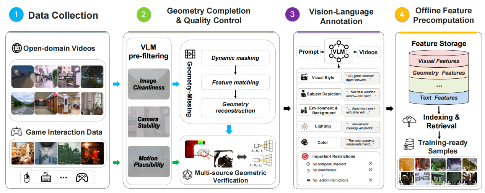
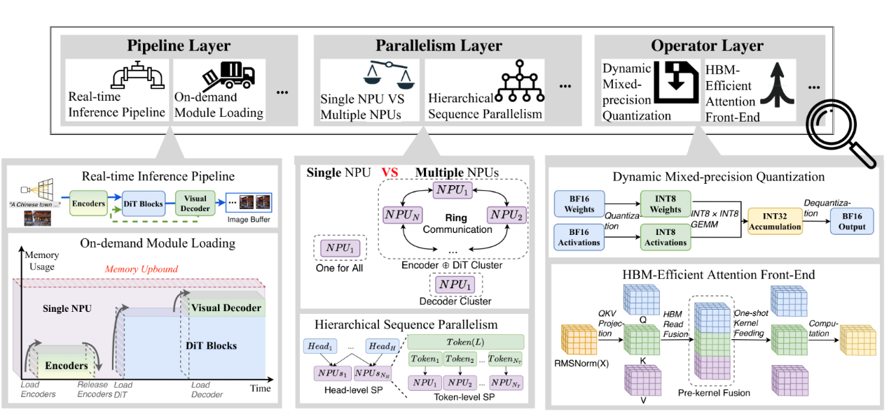

室内场景重建
使用 MoWorld 生成的视频进行室内场景重建，目标精细度高，重建稳定，空间一致性好。
Cost-Efficient NPU Stack
首个面向NPU的实时交互世界模型，从训练、推理到部署全流程基于国产化平台构建，实现高帧率、低成本、可连续控制的视频世界生成。
Data Engine
MoWorld 的训练数据覆盖真实世界（室内、驾驶等）与虚拟世界（游戏、动漫、科幻电影等）多种场景，兼顾丰富性与泛化能力。同时，通过 3D 几何一致性、轨迹精度、多视图稳定性等多维质量筛选，以及几何补全、动态区域过滤和轨迹验证等关键流程，从海量数据中筛选出高质量训练资产，为 MoWorld 的低成本、高性能训练提供了坚实的数据基础。

Real-Time Inference
MoWorld 将实时推理问题分解为三个层级协同优化：流水线层、并行层与算子层，在资源受限场景实现显存高效利用，容纳庞大的模型参数、通信缓冲与推理状态；同时压缩端到端时延，将用户控制信号实时反映到生成帧中，并以流式方式持续输出。

Results
Applications
使用 MoWorld 生成的视频进行室内场景重建，目标精细度高，重建稳定，空间一致性好。
通过连续相机控制探索生成世界，支撑低延迟漫游、镜头控制和交互式内容体验。
面向大场景、真实光照与导演级镜头，快速生成可用于分镜、预演和概念验证的视频世界。